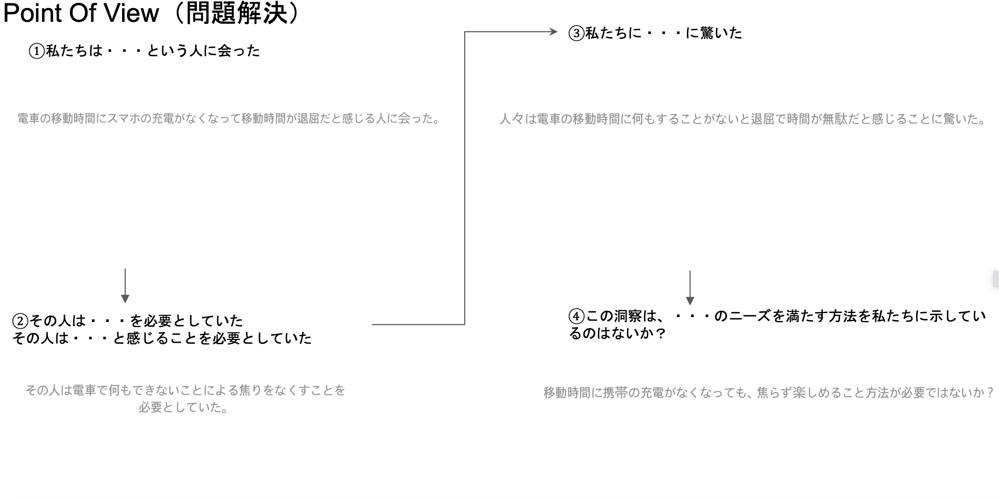

課題１
授業中に作ったプログラム
- #include <Adafruit_NeoPixel.h>
- #define PIN 9 //Arduinoで使うピン
- #define NUMPIXELS 5//LEDの数。
- int brightness=50;//明るさ
- int red_value=0;//赤要素
- int red_target=0;//赤要素の変化_目標値
- int green_value=0;//緑要素
- int green_target=0;//緑要素の変化_目標値
- int blue_value=0;//青要素
- int blue_target=0;//青要素の変化_目標値
- boolean disp=true;
- Adafruit_NeoPixel pixels = Adafruit_NeoPixel(NUMPIXELS, PIN, NEO_GRB + NEO_KHZ800);
- void setup()
- {
- pixels.begin(); // NeoPixel出力ピンの初期化
- pixels.setBrightness(brightness);
- pinMode(PIN,OUTPUT);
- red_value=255;
- red_target=random(0,255);
- green_value=0;
- green_target=random(0,255);
- blue_value=180;
- blue_target=random(0,255);
- for(int i=0; i < NUMPIXELS; i++){
- pixels.setPixelColor(i,pixels.Color(red_value,green_value,blue_value));
- }
- pixels.show();
- }
グループワークのまとめ
負
いろんな意見の中、電車での移動時間が退屈で暇だということの意見があった。
さらに移動中にスマホの充電がなくなると、何にもできなくなり無駄だと感じるようになるという推測をした。
正
サウナで整う時は、何にも考えなくても良いという意見があった。
ここで、「整う」という言葉についての質問があった。
整うという言葉は最近よく使っていて、言葉で表現できない状態だということがわかった。
POV
